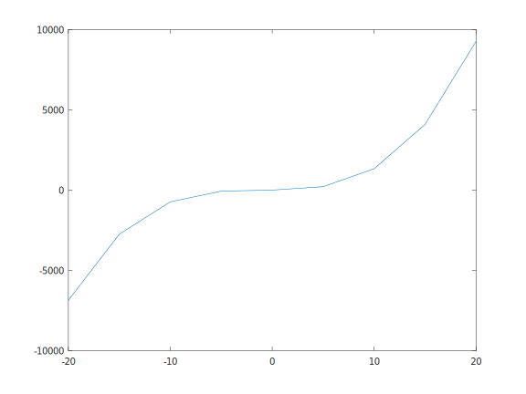
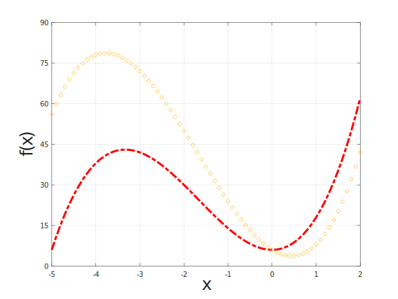
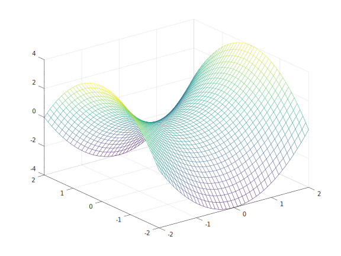
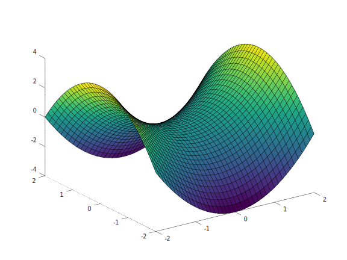
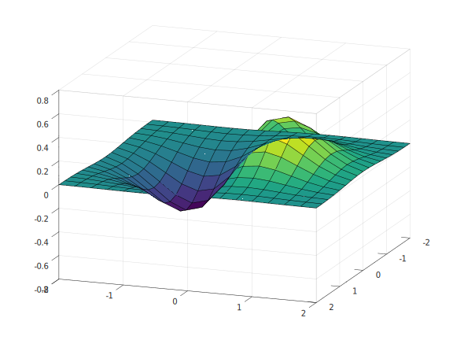
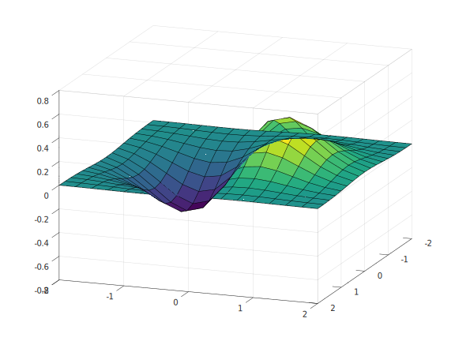

Коришћење математичких функција
У програмском језику Octave постоји пуно уграђених математичких функција које можемо користити. Њих можемо примењивати на скаларе, али и на векторе и матрице,
када добијамо вектор, односно матрицу, исте димензије као почетна чији су елементи добијени применом дате функције на одговарајући елемент.
Можемо користити и математичке константе као што су е и pi. Примери
неких од функција:
>> cos(pi)
ans = -1
>> sin(pi/2)
ans = 1
>> exp([1 2 3 4])
ans =
2.7183 7.3891 20.0855 54.5982
>> sqrt([4 9 16 25]')
ans =
2
3
4
5
>> log([e^2 e^3 e^4 e^5])
ans =
2 3 4 5
>> power(2,[1,2;3,4])
ans =
2 4
8 16Полиноми
У програмском језику Octave подржан је рад са полиномима. Полином се представља низом својих коеифицијената. На пример полином
f(x) = x4 + 2x3 - x + 5 представља се низом c = [1 2 0 -1 5]. Први елемент низа одговара коенфицијенту уз члан највећег степена,
а последњи константи члан. Како у полиному немамо члан степена 2 то посматрамо као да је коефицијент на том месту 0.
Вредност полинома у некој тачки добијамо коришћењем функције polyval:
>> c = [1 2 0 -1 5];
>> polyval(c,0)
ans = 5
>> polyval(c,[0 0.1 0.2 0.3])
ans =
5.0000 4.9021 4.8176 4.7621Корене полинома добијамо коришћењем функције roots
>> roots(c)
ans =
-1.73590 + 0.88173i
-1.73590 - 0.88173i
0.73590 + 0.88173i
0.73590 - 0.88173iКоефицијенте извода и интеграла полинома добијамо редом функцијама polyder и polyint.
>> polyder(c)
ans =
4 6 0 -1
>> polyint(c)
ans =
0.20000 0.50000 0.00000 -0.50000 5.00000 0.00000Генерисање насумичних бројева
Функцијом rand генерише се матрица униформно расподељених насумичних бројева на отвореном интервалу (0,1). За аргументе функције задајемо димензије жељене
матрице. Уколико се аргументи не наведу, подразумева се генерисање једног насумичног броја.
>> A = rand(3,4)
A =
0.34480 0.93419 0.41659 0.46778
0.68106 0.77960 0.14562 0.55920
0.65343 0.40879 0.48002 0.70597randn: Нормална расподела са очекивањем 0 и дисперзијом 1randg: Гама расподелаrande: Експоненцијална расподелаrandp: Пуасонова λ расподела, где се λ задаје као први аргумент функције.
Користећи ове функције аритметиком низова се могу добити друге расподеле истог типа, на пример 7 униформно расподељених елементе на интервалу (2,6) добијамо:
>> B = (rand(1,7)*4)+2
B =
4.0927 2.9322 3.3846 5.3086 3.0378 5.5052 4.2000Сортирање низова
Низови се у програмском језику Octave могу сортирати функцијом sort. Уколико за аргумент функције sort(a) наведемо матрицу,
то се посматра као низ вектора колона који ће сваки за себе бити сортиран:
>> sort(A)
ans =
0.34480 0.40879 0.14562 0.46778
0.65343 0.77960 0.41659 0.55920
0.68106 0.93419 0.48002 0.70597Уколико не желимо да сортирамо по колонама него по редовима, то можемо учинити додавањем броја 2 као други аргумент. Број 1
на том месту означавао би да желимо сортирање по колонама, но како је то подразумевано понашање не мора се наводити.
Ако желимо да се сортирање врши у опадајућем поретку потребно је да додамо аргумент 'descend'.
Осим сортираног низа, односно низа низова, повратна вредност сортирања може бити и низ индекса који одговарају елементу на датој локацији у оригиналном низу, односно низу низова
Све поменуто можемо видети на следећем примеру:
Наредбаsort(a) за повратну вредност имаће сортиран низ a,
али треба имати у виду да је низ a непромењен. Уколико желимо да га променимо потребно је да наведемо наредбу доделе a = sort(a).
>> [S i] = sort(A, 2, 'descend')
S =
0.93419 0.46778 0.41659 0.34480
0.77960 0.68106 0.55920 0.14562
0.70597 0.65343 0.48002 0.40879
i =
2 4 3 1
2 1 4 3
4 1 3 2У примеру сортирали смо редове матрице A у опадајућем редоследу. Матрица i представља редне бројеве колона у којој се у матрици A
налази одговарајући елемент тог реда.
Логичке функције
Често нам је потребно да у низу или матрици пронађемо све елементе који имају одређено својство. За то се може користити функција find.
Функција find проналази све ненула елементе у низу или матрици и враћа њихове локације.
>> [i,j] = find([0 1; 1 0])
i =
2
1
j =
1
2Добијени вектори i и j представљају редом број колоне и број реда одговарајућег ненула елемента матрице.
Упарено са логичким оператором, о чему више пише у секцији Променљиве и операције, функцију find можемо користити на следећи начин:
>> [i,j] = find(A>0.5)
i =
2
3
1
2
2
3
j =
1
1
2
2
4
4Функција any примењена на низ враћа тачну вредност ако у том низу постоји барем једна ненула вредност. Матрица се посматра као низ вектора колона,
тако да ће повратна вредност означавати у којим се све колонама налази барем једна ненула вредност. Слично ради и функција all осим што она проверава
да ли су све вредности у датој колони, односно низу ненула вредности:
>> any([0 1; 0 0])
ans =
0 1
>> all([0 1; 0 0])
ans =
0 0Цртање графика
У програмском језику Octave подаци се могу визуелно приказати користећи уграђену функцију plot. За први аргумент наводимо растући низ тачака на x-оси,
а други низ вредности функције у одговарајућим тачкама
>> c = [1 3 3 1]; x = [-20:5:20]; y = polyval(c,x); plot(x,y)
 Подразумевано тачке су на графику повезане правим линијама. Повећањем броја тачака график постаје детаљнији.
Својства графика можемо мењати навођењем аргумената функције plot- назив својства и жељене вредности што можемо видети у табели:
plot |
својство | вредности |
|---|---|---|
linewidth |
Број који представља жењену дебљину линије | |
linestyle |
Стил линије може бити "-", "--", ":", "-." или "none" и представља редом
пуну линију, испрекидану, тачкасту, црта-тачка-црта и неповезане тачке |
|
markersize |
Величина тачака на графику | |
color |
Боја графика задаје се називом или као низ од три броја који представљају интензитет црвене, зелене и плаве боје у тој боји на скали 0 до 1 | |
marker |
Стил исцртавања познатих тачака на графику, што може бити директно задат карактер ('+', 'o', '*',
'>' ...), или назив облика ('square', 'diamond', 'pentagram', 'hexagram') |
Још нека својства могу се подесити функцијом set која за аргументе има парове својство и вредност из табеле:
set |
својство | вредности |
|---|---|---|
xlim, ylim |
Границе графика на x-оси, односно на y-оси. Двочлани низ који садржи доњу и горњу границу интервала. | |
fontsize |
Величина фонта ознака на осама. | |
xlabel, ylabel |
Ознаке оса | |
linewidth |
Број који представља дебљину оквира графика | |
xticks, yticks |
Монотони низ бројева који представља обележене тачке на оси. | |
title |
Назив графика |
Наредбама grid on и grid off може се укључити и укључити координатна мрежа. Наредбама hold on и hold off може се
укључити и искључити останак старог графика на слици приликом исцртавања новог, и на тај начин се може цртати више графика на истом простору.
Неке од наведених опција можемо видети на примеру:
>> c1 = [2 10 0 6]; c2 = [2 10 -10 6];
>> x = [-5:0.1:2]; y1 = polyval(c1,x ); plot(x,y1 ,"color","red","linestyle","-.", "linewidth", 3); grid on; hold on;
>> y2 = polyval(c2,x ); plot(x,y2 ,"color",[1 0.7 0],"diamond");
>> set(gca, "ylabel", text("string", "f(x)", "fontsize", 25))
>> set(gca, "xlabel", text("string", "x", "fontsize", 25))
>> set(gca, "ylim", [0 90])
>> set(gca, "ytick", [0:15:90])

Вишедимензиони график
За дефинисање вишедимензионог домена функције корисна нам је уграђена функција meshgrid. На примеру видимо како можемо добити матрице
x и y координата чворова на мрежи димензије 4x3:
>> x = [1 2 3]; y = [1 2 3 4]; [X Y] = meshgrid(x,y)
X =
1 2 3
1 2 3
1 2 3
1 2 3
Y =
1 1 1
2 2 2
3 3 3
4 4 4Постоји више начина исцртавање тродимензионих графика. Уколико желимо да нацртамо површ у простору користе се функције surface и mesh што ћемо показати на примеру функције z(x,y) = x2 - y2
на домену [-2,2]x[-2,2]:
x = [-2:0.1:2]; y = x;
>> [X Y] = meshgrid(x,y);
>> Z = X.^2 - Y.^2;
>> mesh(X,Y,Z)

>> surface(X,Y,Z)

Угао гледања ових површи можемо мењати коришћењем функције view задавањем азимута и висине тачке гледања у степенима
Приказ исте површи посматране из тачака (20,20) и (-20,-20) редом:
 
Параметарски задате криве у простору цртамо функцијом plot3 као у примеру:
t = 0:0.1:10*pi;
r = linspace (0, 1, numel (t));
z = linspace (0, 1, numel (t));
plot3 (r.*sin(t), r.*cos(t), z)